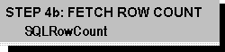

If the statement executed in Step 3 was an UPDATE, DELETE, or INSERT statement, the application retrieves the count of affected rows with SQLRowCount. For more information, see “Determining the Number of Affected Rows” in Chapter 12, “Updating Data.”
The application now returns to Step 3 to execute another statement in the same transaction or proceeds to Step 5 to commit or roll back the transaction.